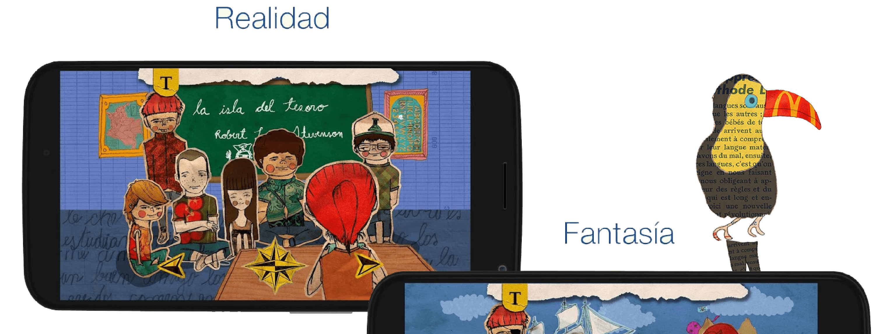
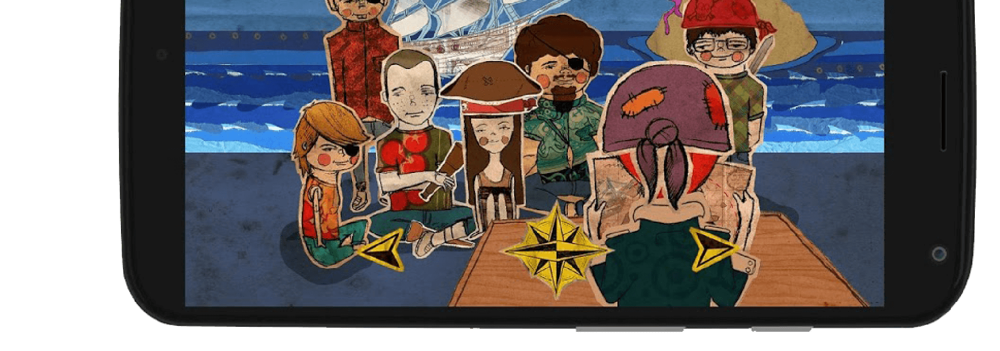
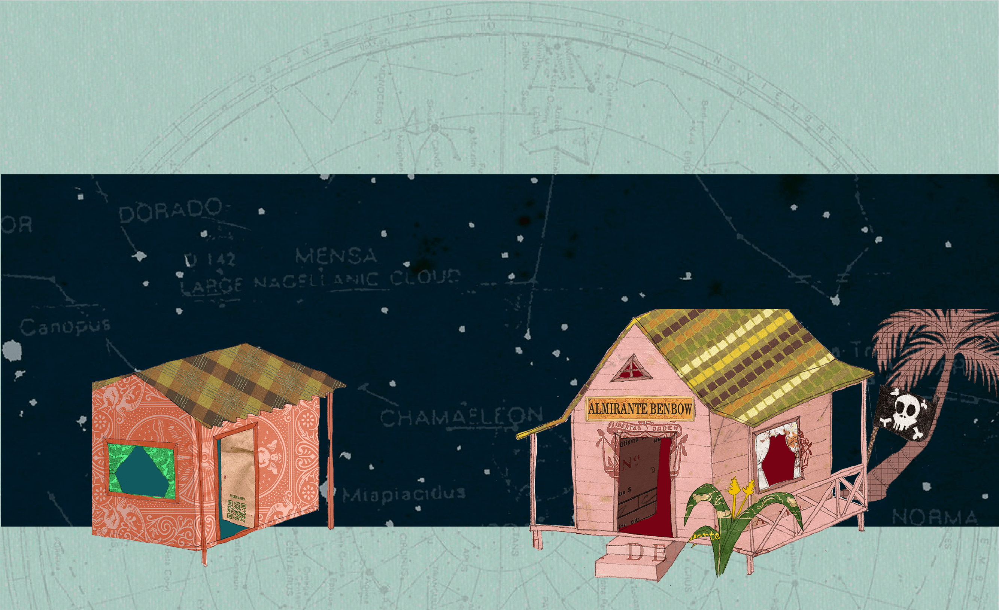
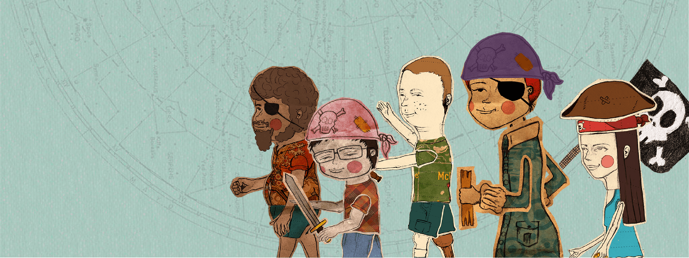
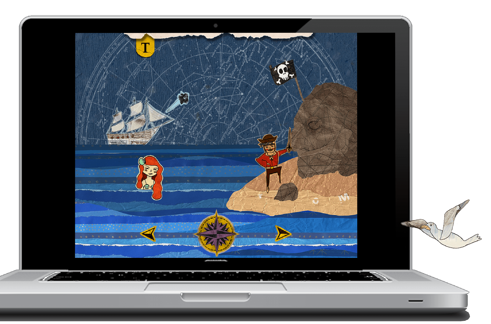
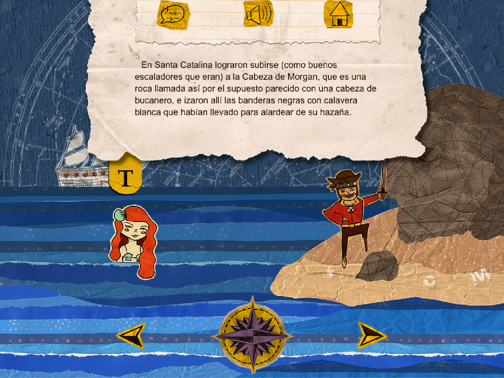
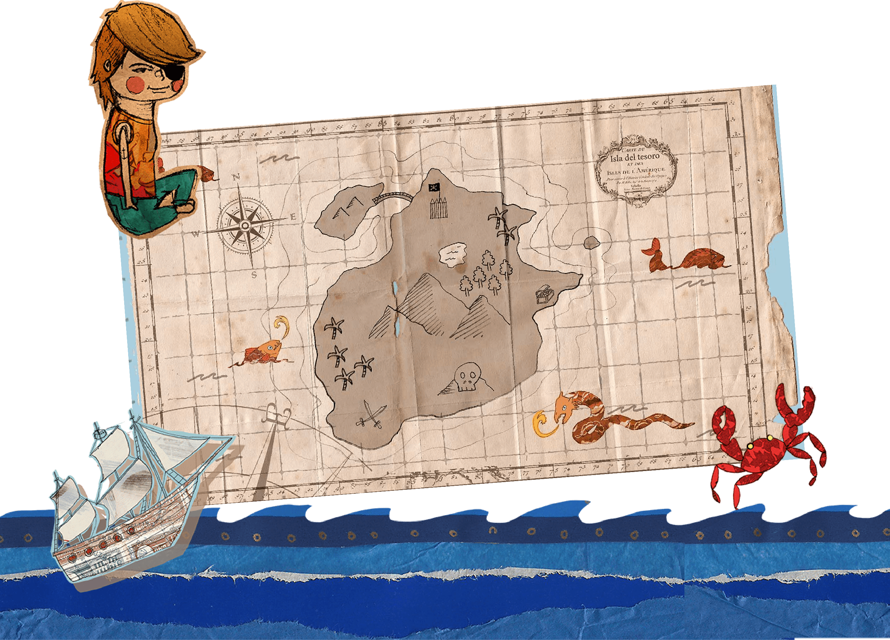

Cliente: Fiesta del Libro de Medellín
Nombre: La isla del tesoro
Plataforma: web, ios, android
Link: www.reddebibliotecas.org.co
Año: 2015


Todos los años, la Fiesta del Libro de Medellín produce su famosísimo «Cuentico amarillo», donde un autor local rinde homenaje a una obra de la literatura universal. En esta versión del poeta Jaime Jaramillo Escobar (X-504) del clásico de Robert Louis Stevenson, la aventura de la búsqueda del tesoro se traslada a la isla de Santa Catalina, en el archipiélago de San Andrés, adonde llega un grupo de chicos inspirados por la lectura de la novela.

La Isla del tesoro, en su versión digital, ofrece una experiencia de lectura radicalmente distinta de su versión impresa (la cual se puede consultar acá), donde se conjugan la realidad, la ficción, la música y la exploración.


En esta versión del «Cuentico amarillo», la segunda realizada por nuestro equipo, se implementaron botones que controlan texto, música y voz para mejorar la legibilidad tanto en pantallas de PC y tabletas como en dispositivos celulares.

